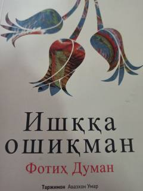

IOQalb va ishq mavzusiga bag'ishlangan ta'sirli ma'naviy asar.
Mazkur kitob inson qalbidagi ishq, dard va ilohiy muhabbat mavzulariga bag'ishlangan bo'lib, muallif o'z kechinmalari orqali kitobxonni ruhiy izlanishlarga chorlaydi. Asar ishq tushunchasining sir-asrorlari va uning inson hayotidagi o'rnini falsafiy-diniy nuqtai nazardan ochib beradi. O'quvchini o'z ichki olamiga nazar tashlashga va samimiy tuyg'ularni his qilishga undaydi.